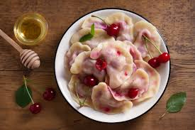
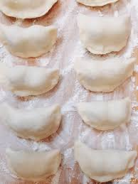

Witamy na stronie poświęconej pierogom!
Historia pierogów
Pierogi, jako potrawa, mają bogatą historię, która sięga średniowiecza. Początkowo były przygotowywane przez różne kultury w Europie Środkowej i Wschodniej, a ich receptury były przekazywane z pokolenia na pokolenie. Stały się szczególnie popularne w Polsce, gdzie zyskały status dania narodowego, często serwowanego podczas rodzinnych spotkań i świąt.
Etymologia słowa pierogi wywodzi się z prasłowiańskiego pirъ lub pirogъ, co oznacza ciasto lub potrawę. W różnych językach słowiańskich występują różne formy tego terminu, co świadczy o szerokim rozpowszechnieniu i popularności tej potrawy w regionie.
Z biegiem lat pierogi przekształcały się, dostosowując nadzienia do lokalnych smaków i składników. Współcześnie można je spotkać w wielu wersjach, od tradycyjnych mięsnych i kapuścianych po nowoczesne, wegetariańskie i słodkie, co czyni je niezwykle uniwersalnym daniem.
Przepis na pierogi z wiśniami
na około 50-60 pierogów
Składniki:
- 500 g mąki pszennej
- 250 ml/szklanka gorącej wody
- 50 ml/4 łyżki oleju
- 500 g wiśni (lub innego nadzienia)
- szczypta soli
Sposób przygotowania:
- Do szerokiej miski przesiej mąkę. Dodaj sól oraz olej.
- Wlej szklankę gorącej, przegotowanej wody (250 ml) i wyrabiaj chwilę ciasto - najlepiej ręcznie. Na początku, jeśli ciasto jest gorące, możesz je zamieszać łyżką. Kulę ciasta zawiń w folię i odłóż na 30 minut. Ciasto po leżakowaniu nie będzie się kurczyć podczas wałkowania.
- Rozwałkuj ciasto na cienki placek i wycinaj krążki za pomocą szklanki. Każdy dodatkowo rozciągnij w dłoniach.
- Na każdy krążek ciasta połóż kilka wiśni (lub innego nadzienia).
- Złóż krążki na pół i dokładnie zlep brzegi. W przypadku, w którym brzegi nie chcą się zze sobą lepić, mozesz pokryc brzegi odrobiną wody.
- Gotuj pierogi w osolonym wrzątku przez około 3-4 minuty od momentu wypłynięcia na powierzchnię. Pierogi oczekującce na gotowanie przykryj lekko wilgotną bawełnianą ściereczką, aby nie wysychały.
Wskazówka: Możesz zmieniać nadzienie według własnych upodobań - na przykład na jagody, truskawki, twaróg, farsz na piergi ruskie czy mięso.